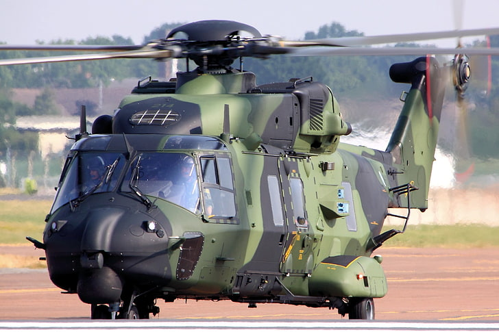
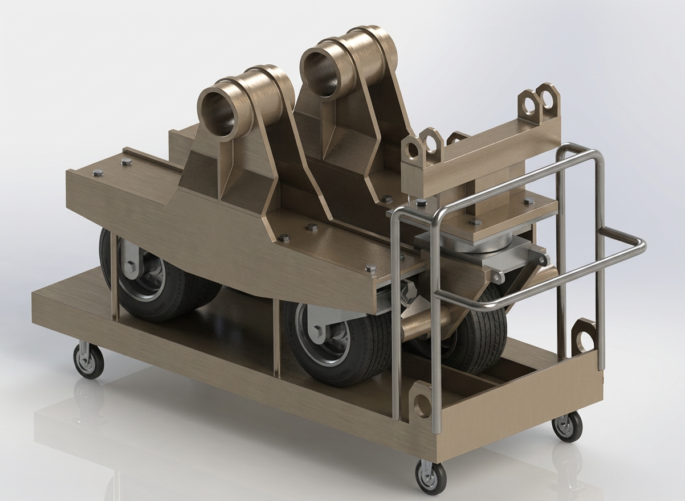
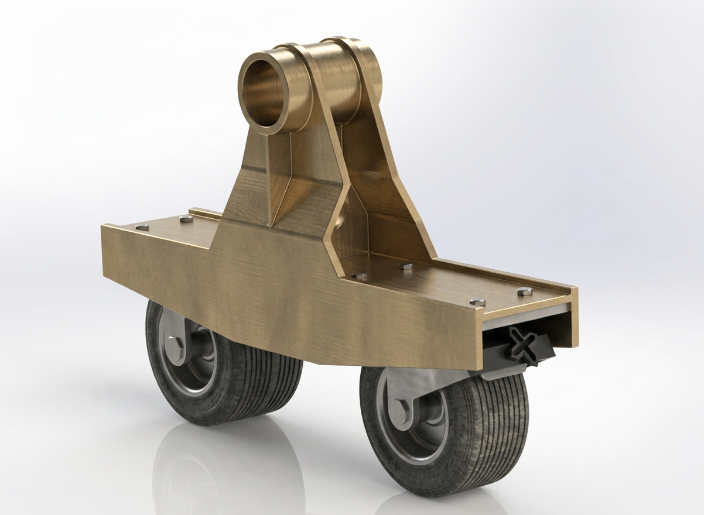
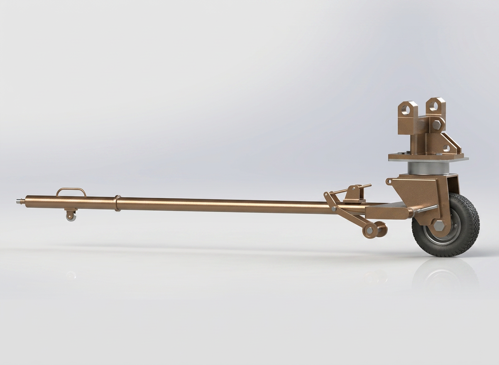
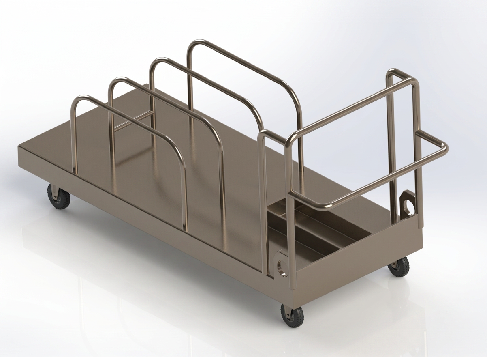
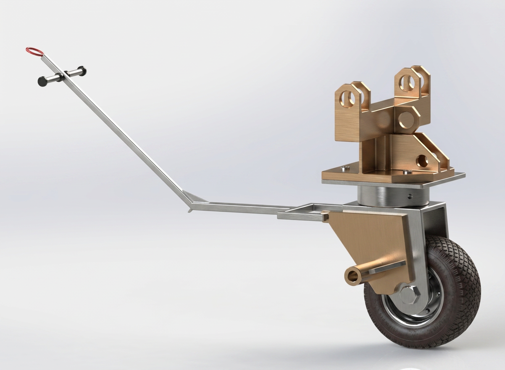

01 / FALSE FRONT GEAR
False front gear
Front landing-gear assembly developed as part of the aircraft ground-support configuration, with the associated towing interface integrated into the design.

NH90 PLATFORM / REFERENCEA ground-support equipment project covering the design of false landing gear, towing interfaces and a storage / handling system for the NH90 helicopter platform.
The project focused on an NH90 false landing gear system comprising the false gear assemblies, towing arrangement and storage / handling equipment. The engineering task extended beyond individual part modelling: the components had to function together as a ground-support system.
The design workflow was structured around requirements, concept development, interface definition, 3D CAD, structural analysis and the preparation of engineering drawings and documentation.

The naming below follows the component terminology used in the supplied NH90 technical brochure as a reference, while the visuals shown are from the user's own design work.
Front landing-gear assembly developed as part of the aircraft ground-support configuration, with the associated towing interface integrated into the design.

Paired main-gear assemblies forming the supporting equipment set for the aircraft ground configuration.

Towing member developed to interface with the false gear assembly and provide a controlled means of ground movement.

Dedicated storage and handling equipment used to keep the false gear components organized and movable when not installed.
Rather than presenting the assembly as a single CAD object, the design was considered through the interfaces that make the equipment usable in operation, handling and maintenance.
Geometry and attachment conditions were treated as the primary boundary between the false gear and the aircraft-side installation points.
Wheel assemblies provide the rolling support required for the ground-support configuration and connect the structural frame to the ground.
The front gear and towing member were developed as a coupled interface so towing loads and practical handling could be considered together.
Dedicated structural features support lifting, positioning and movement of the equipment during storage and workshop handling.
The storage cart provides a defined home for the equipment set and keeps the individual assemblies grouped for movement and storage.
2D drawings, assemblies and documentation translate the developed CAD definition into information usable for fabrication and assembly.
A visual record of the developed equipment. The gallery uses the project renders rather than the reference brochure imagery.

The project was developed progressively from requirements and concept work into detailed CAD. The tracker records completion across requirements, concept study, design ideation and CAD design before moving into structural analysis, manufacturing drawings and documentation.
The towing arrangement is treated as part of the system architecture rather than an accessory. The developed front assembly and towing member are shown together to communicate the intended interface and operating relationship.
The storage cart groups the false landing-gear assemblies into one movable package, making the relationship between the individual equipment items visible in the final system.
The strongest part of the work is the connection between aircraft interfaces, mobility, towing, handling, storage and engineering definition. The project demonstrates a systems-oriented mechanical design workflow: understand the boundary conditions, structure the equipment set, develop the interfaces, model the assemblies, analyse the structure and communicate the design for the next manufacturing step.